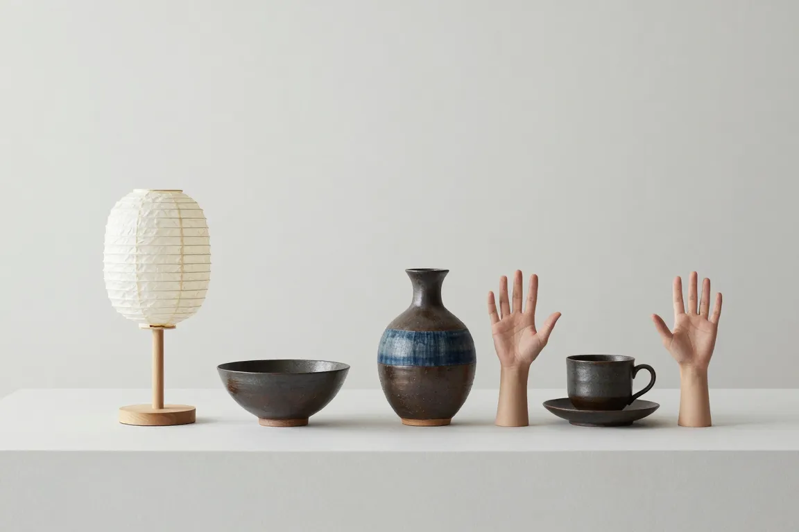

industrial · 1950–present · also: Mingei-influenced design, Japanese modern product, Kogei-modern
Japanese household objects of bamboo, paper, clay, iron and plain wood: the mingei idea of beauty in ordinary things, joined to post-war modern design and light industrial series.

Core thesis
A useful object made with skill from a local material is beautiful without ornament; the maker's hand and the material leave the only decoration.
Design principles
Use a local material of plain character: bamboo, washi paper, clay, cast iron, cotton or ash.
Leave the mark of the hand in view: throwing rings, a brush stroke, a weave or a tool cut.
Join parts without hidden fixings: a joint, a lashing or a single brass rod stays in view.
Draw a form from use, in a pure curve or a straight line, with no applied pattern.
Keep colours to the natural tones of the material, with indigo, iron brown and unbleached white.
Let the object leave space round it: a small body in an open, empty room.
Make each object so that it improves with use, and mend it with the same craft.
Join the craft method to a light series, so that a household can own the object.
Anti-patterns
Applied pattern and gilt ornament
High-gloss plastic and chrome
Perfectly even machine finish with no trace of the hand
Dragon, wave and cherry blossom motifs as souvenir decoration